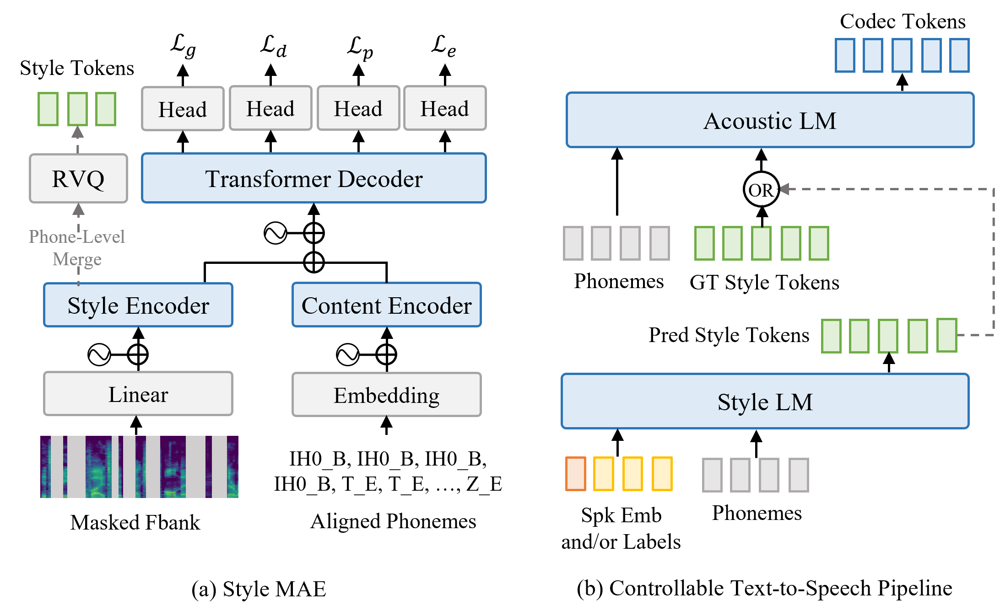

Anonymous Author
Abstract. Controllable text-to-speech (TTS) systems aim to manipulate various stylistic attributes of generated speech. Despite considerable research in this area, existing models that use natural language prompts as an interface often lack the ability for fine-grained control and face a scarcity of high-quality data. To address these challenges, we propose a two-stage language model for style-controllable TTS, utilizing a masked-autoencoded style representation as an intermediary. In our approach, we employ a masked autoencoder to learn a content-disentangled style feature of speech, which is then discretized using a residual vector quantizer. In the first stage, an autoregressive transformer is used for the conditional generation of these style tokens from text and control signals. In the second stage, we generate codec tokens from both text and sampled style tokens. Experiments demonstrate that training the first-stage model on extensive datasets enhances the robustness of the two-stage model in terms of quality and content accuracy. Additionally, our model achieves superior control over attributes such as pitch and emotion. By selectively combining discrete labels and speaker embeddings, we can fully control the speaker’s timbre and other stylistic information, or adjust attributes like pitch and emotion for a specified speaker. Audio samples are available at https://style-ar-tts.github.io.

Our controllable TTS system consists of two major stages with a discrete style token as an intermediate representation. This style representation is from a transformer-based MAE as illustrated in figure (a), which learns to capture style information including speaker timbre, prosody, and acoustic environment in the speech with a mask-reconstruction paradigm. The style tokens of a speech clip can be extracted with the style encoder of the pre-trained MAE followed by a residual vector quantizer (RVQ) trained individually. The two stages of TTS are (1) style token (ST) generation, which generates style tokens conditioned on content phonemes and style controlling signals including discrete labels and / or continuous speaker embeddings; and (2) codec token (CT) generation, which generates codec tokens conditioned on content phonemes and style tokens, where the style tokens are either extracted from ground truth speech or predicted by the former stage. The generated codec tokens are then used to reconstruct the waveform with the codec decoder. Each of the two stages relies on a decoder-only transformer to conduct LM-style generation, as illustrated in figure (b). We provide details of these modules respectively in the following subsections.
In this section, we provide some results of reconstructing speech from ground truth style tokens, as well as ground truth speech, compressed speech from codec, and zero-shot TTS results. You may need to scroll right to see full results.
| Transcript | Ground Truth | GT. + codec | Acoustic LM + GT. style tokens | YourTTS | XTTS-V2 |
|---|---|---|---|---|---|
| LibriTTS | |||||
| The lower of the three is Gilchrist, a fine scholar and athlete, plays in the Rugby team and the cricket team for the college, and got his Blue for the hurdles and the long jump. | |||||
| Nothing happened, however, to interfere with the successful running of the station, and for twenty years thereafter the same two dynamos continued to furnish light in Sunbury. | |||||
| In the palace yard stood two soldiers with shining helmets, and with muskets over their shoulders; and when Anders came, both the muskets were levelled at him. | |||||
| Gigaspeech | |||||
| thank you, said alice, feeling very glad that the figure was over. | |||||
| he was here to present from his latest book of photography and text, blind spot, | |||||
| but we've got extra information in there to make it a lot easier for keyboard-only users and screen reader users to use. | |||||
| then i add the handlers for managing changes and adding new items on the inputs and outputs, | |||||
| you can save your ether for reuse although it should be stored over sodium to destroy any contaminants. | |||||
| DailyTalk | |||||
| Is it possible to change to another room? | |||||
| Yeah? Umm can I take a look at the Sirs you carry? | |||||
In this section, we provide results of controlling speech attributes with discrete labels. We change specific attributes labels based on ground truth label combinations, and also use the pitch MLP predictors on some samples for avoiding the conflict between control signals.
| Transcript | Male | Female |
|---|---|---|
| But this subject will be more properly discussed when we treat of the different races of mankind. | ||
| The bell rang. The master marked the sums and cuts to be done for the next lesson and went out. | ||
| The objection of course presents itself that expenditure on women's dress and household paraphernalia is an obvious exception to this rule; but it will appear in the sequel that this exception is much more obvious than substantial. |
| Transcript | Emotion Labels | Result |
|---|---|---|
| Oh! it is better to live on the sea and let other men raise your crops and cook your meals. | A=2, V=2, D=3 (Depressed) | |
| A=4, V=4, D=5 (Netural) | ||
| A=6, V=7, D=7 (Happy) | ||
| A=7, V=2, D=8 (Angry) | ||
| The whores would be just coming out of their houses making ready for the night, yawning lazily after their sleep and settling the hairpins in their clusters of hair. He would pass by them calmly waiting for a sudden movement of his own will or a sudden call to his sin loving soul from their soft perfumed flesh. | A=3, V=2, D=4 (Negative) | |
| A=3, V=6, D=4 (Leisurely) | ||
| A=5, V=7, D=6 (Delighted) | ||
| A=6, V=2, D=7 (Angry) | ||
| The day of the entertainment was as sunny and mild as heart could desire. | A=2, V=2, D=3 (Depressed) | |
| A=4, V=3, D=5 (Neutral) | ||
| A=6, V=7, D=7 (Happy) | ||
| A=7, V=2, D=8 (Angry) | ||
| Every strong impression which you make upon his perceptive powers must have a very lasting influence, and even the impression itself may, in some cases, be forever indelible. | A=3, V=3, D=4 (Calm) | |
| A=7, V=4, D=8 (Emotional) |
| Transcript | Age Label | Result |
|---|---|---|
| Let us have compassion on the chastised. | 1 (5-14 years old) | |
| 3 (25-34 years old) | ||
| 4 (35-44 years old) | ||
| 5 (45-54 years old) | ||
| 7 (65-74 years old) | ||
| And God lighted a fire in the second orbit from the earth which is called the sun, to give light over the whole heaven, and to teach intelligent beings that knowledge of number which is derived from the revolution of the same. | 2 (15-24 years old) | |
| 4 (35-44 years old) | ||
| 6 (55-64 years old) | ||
| "But what is the delicate mission?" I asked. | 2 (15-24 years old) | |
| 4 (35-44 years old) | ||
| 6 (55-64 years old) | ||
| 8 (75-84 years old) |
| Transcript | Pitch Mean Label | Result |
|---|---|---|
| I must by no means show in such company as was now present the strong feeling which pervaded my own mind. | 1 | |
| 2 | ||
| 3 | ||
| 4 | ||
| But let us turn more particularly to the history of the Church itself. | 2 | |
| 3 | ||
| 4 | ||
| I was not a bit afraid of being found out. | 2 | |
| 3 | ||
| 4 | ||
| 5 | ||
| 6 | ||
| 7 | ||
| "I've been bothered already over your election campaign," resumed the manager, arranging his papers in a bored manner. | 2 | |
| 3 | ||
| 4 | ||
| 5 | ||
| 6 | ||
| 7 |